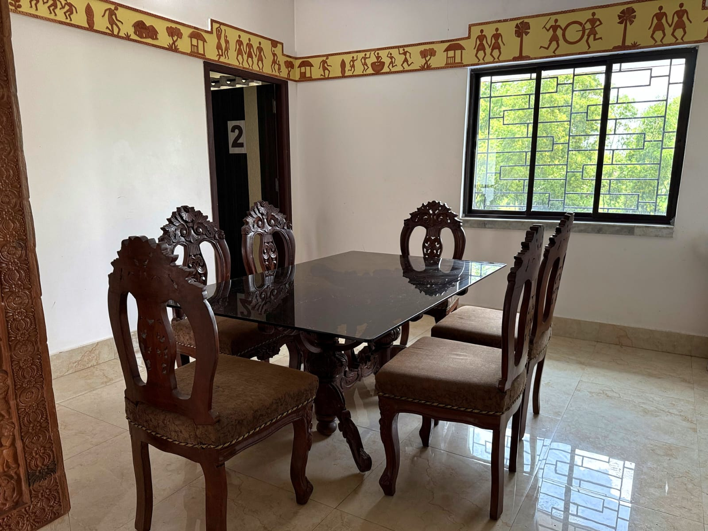

There is a particular comfort in sitting down to a Bengali meal. The rice is familiar, the dal is reassuring, a bhaja adds its crisp little note, and the rest of the plate changes with the season, the household and the occasion. It is not simply a list of dishes. It is a rhythm, shaped by everyday habits and the pleasure of feeding people well.
For a visitor discovering Santiniketan and Bolpur, this is a delicious place to begin. You do not need to know every dish by name. Start with curiosity, follow the aromas, and leave a little room for the final sweet.
Rice at the centre, variety around it
Rice, or bhaat, is a familiar anchor of many Bengali meals. Around it gather lentils, vegetables, greens, fish or other preparations according to taste and custom. A simple plate can be deeply satisfying: warm rice, a spoonful of dal, a seasonal vegetable and a squeeze of lime.
That variety matters. A meal might include shukto, a gently bitter vegetable preparation; shaak, or leafy greens; dal; and one or two kinds of bhaja, the crisp fried side dishes. There may be a vegetable curry, fish, or a meat dish too. Not every home serves every course, and everyday meals are often much simpler than a festive spread. The pleasure is in the balance.
The little details that make the flavour
Mustard, posto and panch phoron
Mustard can bring a lively sharpness to a dish, whether used as a paste or as a seasoning. Posto, or poppy seed, is loved for its mellow, nutty character. And panch phoron, a blend of five whole spices, can give vegetables and lentils a distinctive fragrant beginning. These ingredients do not make every Bengali dish taste the same; they are part of a much wider kitchen vocabulary.
Seasonal vegetables and the everyday kitchen
Food changes as the market changes. Different greens, gourds, aubergines, pumpkins, potatoes and other vegetables find their way into home cooking through the year. A dish that feels just right in one season may give way to something entirely different a few months later. That connection with what is fresh and available is part of the charm of eating locally.
From the savoury plate to the sweet ending
Many Bengali meals make room for a sweet-sour chutney, perhaps with tomato, mango when in season, or another fruit. It offers a bright change of pace before the meal comes to a close. Then comes the part many guests are already waiting for: mishti.
Sandesh, rosogolla and mishti doi are well-loved names, while payesh brings the comfort of a gently cooked milk-and-rice pudding to celebrations and family tables. In the cooler months, date-palm jaggery, or khejur gur, appears in seasonal sweets and home treats. Availability varies, so it is always worth asking what is fresh when you visit.

A slower pace, a little conversation and time for one more cup of tea.
Small bites for a wandering afternoon
Not every food memory needs a full meal. A relaxed afternoon in and around Bolpur may call for a cup of tea and something savoury: jhalmuri, a spicy puffed-rice snack; ghugni, a warm yellow-pea curry; or a freshly fried chop or other local snack when you find it being made. Street-food choices and opening times change, so follow the day’s local advice and choose a busy, clean stall where the food is freshly prepared.
Food is also a way of welcoming
In a home, the question “Have you eaten?” can be an expression of care. A meal gives people a reason to sit together, talk about the day and exchange stories. Around Santiniketan, where visitors come for its arts, learning, landscape and cultural life, sharing food can become part of the memory of the journey too.
At Udita Homestay, we believe a good stay is made up of these human details: a warm greeting, a comfortable place to rest, useful local guidance and the chance to experience the region at an unhurried pace. Ask us what is in season during your visit, and we will be happy to help you plan your food explorations. Specific dishes and meal arrangements depend on availability and should be confirmed with the homestay before your arrival.
A few thoughtful tips for guests
- Ask what is seasonal rather than looking for one fixed “Bengali menu”.
- Let your host or server know about allergies, dietary preferences and spice tolerance before ordering.
- Try a small local snack, but choose food that is freshly prepared and served hot.
- Take your time. A conversation over tea can be as memorable as the meal itself.
That is the joy of discovering food in a new place: one flavour leads to another, and an ordinary meal becomes a story you carry home.